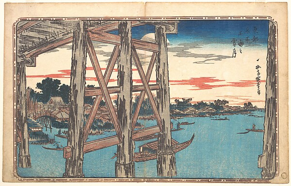

MD
Mira DasWorkshopWriting craft · 2 hours ago
When is a scene finished?
I keep polishing my opening paragraph when I probably need to move on. What helps you decide a scene has done enough?
24 8 replies Save
 WordWeft
WordWeftThe things we learn while trying to put a story into words.

I keep polishing my opening paragraph when I probably need to move on. What helps you decide a scene has done enough?